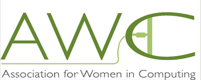

About CS
CS, or Computer Science, is the study of computers and computational systems.
Computer Science mostly deals with software, such as programming, which is different from Electrical Engineering for example, which deals mostly with hardware.
In Computer Science, there are many key areas of focus, such as:
-
Artificial Intelligence
- Cybersecurity
- Computer Systems and Networks
- Vision and Graphics
- Database Systems
- And much more!
Professional Computer Science Organizations
-
 Association for Computing Machinery (ACM): ACM is the world's largest computing society. They provide their more than 100,000 members with life-long learning
development and learning with the help of researchers, educators, and professionals. Together, they raise awareness of important computational technical, educational,
and social issues around the world.
Association for Computing Machinery (ACM): ACM is the world's largest computing society. They provide their more than 100,000 members with life-long learning
development and learning with the help of researchers, educators, and professionals. Together, they raise awareness of important computational technical, educational,
and social issues around the world.
This is the ACM Website
-
Computing Research Association (CRA): CRA is a non-profit association of North American departments of computer science and related fields.
The mission of CRA is to promote innovation by working together with industry and government to strengthen research in computing.
This is the CRA Website
-
Association for the Advancement of Artificial Intelligence (AAAI): AAAI is an international organization which promotes Artificial Intelligence. AAAI aims to
increase public awareness about AI, reasonable use of AI, and provide guidance about the future and potential of AI developments. They often hold many conferences,
where they discuss the newest discoveries of AI, as well as keep members aware of the new research going on in the field.
This is the AAAI Website
-

Association for Women in Computing (AWC): AWC is one of the first professional organizations for women in computing. The main goal of AWC is to promote and
encourage the advancement of women in technology and computing professions. AWC also provides multiple opportunities for professional growth through networking
and other programs available.
This is the AWC Website
There is lots of cutting edge research going on in the Computer Science field as of right now.

-
Machine Learning and Genomics Lab: Professor Sankararaman and his research group handle research with computer science,
statistics, and biomedicine. One of the major focuses of the research team is the understanding of genomes. To pursue this
focus, they develop and expand tools from machine learning, high-dimensional statistics, and information theory.
Other areas of focus for their research team are:
-
Genomic privacy
-
Population genetic inference
-
Understanding how genes affect traits
-
Machine learning for clinical data
-
Machine learning for large-scale genomic data
Machine Learning and Genomics Lab Website
-
Network and Embedded Systems Lab: This research group is in the area of embedded and cyber-physical systems for applications
in Internet of Things, mobile computing, and more. Their interests are in making all these systems secure, privacy-aware,
wirelessly-networked, energy-efficient, etc. Overall, Professor Mani Srivastava and his research team are working across multiple
layers of systems, including algorithms, software, and hardware to reach their goals
Network and Embedded Systems Lab Website
-
Wireless Networking Group (WiNG) Lab: WiNG's research includes the areas of cloud computing, mobile systems, and wireless networking.
The focus of WiNG is on design, implementation and experimentation of protocols, and algorithms for wireless data networks.
With Professor Songwu Lu and her research team, they are working towards reaching their goa of building dependable and
high-quality network solutions for the wireless internet.
Wireless Networking Group (WiNG) Lab Website
-
Multimedia Information System Technology Group (MIST): MIST is a research group based in the Computer Science department of
UCLA, in collaboration with the UCLA School of Medicine and the Department of Radiological Sciences. This group focuses in
multimedia database management, patent information retrieval and mining, and more.
Multimedia Information System Technology Group (MIST)